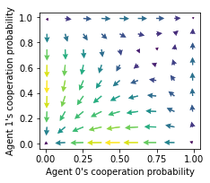

x = ([0], [2,3,5], [0])
y = ([1], [2,3,5], [0])
_checks_and_balances(x, y)(array([1, 3, 1]), 1, 3)plot_strategy_flow (mae, x:tuple, y:tuple, flowarrow_points, NrRandom:int=3, use_RPEarrows=True, col:str='LEN', cmap='viridis', kind='quiver+samples', sf=0.5, lw=1.0, dens=0.75, acts=None, conds=None, axes:Iterable=None, verbose=False)
Create a flow plot in strategy space.
| Type | Default | Details | |
|---|---|---|---|
| mae | MARLDynamics multi-agent environment object | ||
| x | tuple | which phase space axes to plot along x axes | |
| y | tuple | which phase space axes to plot along y axes | |
| flowarrow_points | specify range & resolution of flow arrows | ||
| NrRandom | int | 3 | how many random (in the other dimensions) stratgies for averaging |
| use_RPEarrows | bool | True | Use reward-prediction error arrows?, otherwise use strategy differences |
| col | str | LEN | color indicates either strength of flow via colormap, otherwise a fixed color name |
| cmap | str | viridis | Colormap |
| kind | str | quiver+samples | Kind of plot: “streamplot”, “quiver+samples”, “quiver”, … |
| sf | float | 0.5 | Scale factor for quiver arrows |
| lw | float | 1.0 | Line width for streamplot |
| dens | float | 0.75 | Density for streamplot |
| acts | NoneType | None | Action descriptions |
| conds | NoneType | None | Conditions descriptions |
| axes | typing.Iterable | None | Axes to plot into |
| verbose | bool | False | shall I talk to you while working? |
plot_trajectories (Xtrajs:Iterable, x:tuple, y:tuple, cols:Iterable=['r'], alphas:Iterable=[1.0], lss:Iterable=['-'], lws:Iterable=[2], mss:Iterable=[None], msss:Iterable=[0], fprs:Union[Iterable,bool]=None, axes:Iterable=None, submean=False)
Plot multiple trajectories in phase space.
| Type | Default | Details | |
|---|---|---|---|
| Xtrajs | typing.Iterable | Iterable of phase space trajectories | |
| x | tuple | which phase space axes to plot along x axes | |
| y | tuple | which phase space axes to plot along y axes | |
| cols | typing.Iterable | [‘r’] | Colors to iterate through |
| alphas | typing.Iterable | [1.0] | Alpha values to iterate through |
| lss | typing.Iterable | [‘-’] | Linestyles to iterate through |
| lws | typing.Iterable | [2] | Linewidths to iterate through |
| mss | typing.Iterable | [None] | Markers to iterate through |
| msss | typing.Iterable | [0] | Marker sizes to iterate through |
| fprs | typing.Union[typing.Iterable, bool] | None | Iteralbe indicating which trajectories reached a fixed point |
| axes | typing.Iterable | None | Axes to plot into |
| submean | bool | False |
_checks_and_balances (x:tuple, y:tuple)
Check the format of the x and y parameter.
| Type | Details | |
|---|---|---|
| x | tuple | which phase space axes to plot along x axes |
| y | tuple | which phase space axes to plot along y axes |
| Returns | tuple | (lengths for each dimension, index of dimension to iter, length of iter) |
Let’s say we want to plot the probability of cooperation of the 0th agent on the \(x\) axis and of the 1st agent on the \(y\) axis for states 2,3 and 5, we specify (assuming the cooperation is the 0th action)
x = ([0], [2,3,5], [0])
y = ([1], [2,3,5], [0])
_checks_and_balances(x, y)(array([1, 3, 1]), 1, 3)_prepare_axes (axes:Iterable, xlens:tuple)
Check whether axes have been provided correctly. If axes haven’t been provided, provide them.
| Type | Details | |
|---|---|---|
| axes | typing.Iterable | Axes to plot into |
| xlens | tuple | Lengths for each dimension of x and y |
| Returns | typing.Iterable | of matplotlib axes |
_prepare_axes(None, [1,3,1])array([<AxesSubplot:>, <AxesSubplot:>, <AxesSubplot:>], dtype=object)_dXisa_s (Xisa_s:Iterable, mae)
Compute Xisa(t-1)-Xisa(t) for all Xisa_s.
| Type | Details | |
|---|---|---|
| Xisa_s | typing.Iterable | of joint strategies Xisa |
| mae | MARLDynamics multi-agent environment object | |
| Returns | ndarray | joint strategy differences |
from MARLDynamics.Agents.StrategyActorCritic import stratAC
from MARLDynamics.Environments.SocialDilemma import SocialDilemmaenv = SocialDilemma(R=1.0, T=0.8, S=-0.5, P=0.0)
mae = stratAC(env=env, learning_rates=0.1, discount_factors=0.9)
Xisa_s = [mae.random_softmax_strategy() for _ in range(7)]
_dXisa_s(Xisa_s, mae).shape(7, 2, 1, 2)_dRPEisa_s (Xisa_s:Iterable, mae)
Compute reward-prediction errors RPEisa_s for Xs.
| Type | Details | |
|---|---|---|
| Xisa_s | typing.Iterable | of joint strategies Xisa |
| mae | MARLDynamics multi-agent environment object | |
| Returns | ndarray | joint reward-prediction errors |
env = SocialDilemma(R=1.0, T=0.8, S=-0.5, P=0.0)
mae = stratAC(env=env, learning_rates=0.1, discount_factors=0.9)
Xisa_s = [mae.random_softmax_strategy() for _ in range(7)]
_dRPEisa_s(Xisa_s, mae).shape(7, 2, 1, 2)_strategies (mae, xinds:tuple, yinds:tuple, xval:float, yval:float, NrRandom)
Creates strategies (as a particular type of phase space item) for one ax plot point. All strategies have value xval at the xinds index and value yval at the yinds.
| Type | Details | |
|---|---|---|
| mae | MARLDynamics multi-agent environment object | |
| xinds | tuple | of indices of the phase space item to plot along the x axis |
| yinds | tuple | of indices of the phase space item to plot along the y axis |
| xval | float | the value of the phase space item to plot along the x axis |
| yval | float | the value of the phase space item to plot along the y axis |
| NrRandom | how many random (in the other dimensions) stratgies for averaging | |
| Returns | ndarray | Array of joint strategies |
For example, given
env = SocialDilemma(R=1.0, T=0.8, S=-0.5, P=0.0)
mae = stratAC(env=env, learning_rates=0.1, discount_factors=0.9)the following parameters give
xinds = (0, 0, 0) # Plot agent 0's state-action item 0, 0
yinds = (1, 0, 0) # Plot agent 1's state-action item 0, 0
NrRandom = 3
strats = _strategies(mae, xinds, yinds, xval=0.2, yval=0.4, NrRandom=NrRandom)
assert strats.shape[0] == NrRandom
strats.shape(3, 2, 1, 2)The first dimension of the _strategies return hold the randomization in the other dimensions than given by xinds and yinds. Note, the randomization in the other dimensions makes no sense in a stateless normal-form game, since there are not other dimensions.
_data_to_plot (mae, flowarrow_points:Iterable, xinds:tuple, yinds:tuple, NrRandom:int, difffunc:collections.abc.Callable, phasespace_items:collections.abc.Callable, verbose=False)
| Type | Default | Details | |
|---|---|---|---|
| mae | MARLDynamics multi-agent environment object | ||
| flowarrow_points | typing.Iterable | range & resolution of flow arrows | |
| xinds | tuple | of indices of the phase space object to plot along the x axis | |
| yinds | tuple | of indices of the phase space object to plot along the y axis | |
| NrRandom | int | how many random (in the other dimensions) stratgies for averaging | |
| difffunc | Callable | to compute which kind of arrows to plot (RPE or dX) | |
| phasespace_items | Callable | to obtain phase space items for one ax plot point | |
| verbose | bool | False | shall I talk to you while working? |
| Returns | tuple | meshgrid for (X, Y, dX, dY) |
For example, given
env = SocialDilemma(R=1.0, T=0.8, S=-0.5, P=0.0)
mae = stratAC(env=env, learning_rates=0.1, discount_factors=0.9)the following parameters give
xinds = (0, 0, 0) # Plot agent 0's state-action item 0, 0
yinds = (1, 0, 0) # Plot agent 1's state-action item 0, 0
flowarrow_points = np.array([0.1, 0.3, 0.5, 0.7, 0.9])
NrRandom=7
difffunc = _dRPEisa_s
phasespace_items = _strategies
verbose = True
X, Y, dX, dY = _data_to_plot(mae, flowarrow_points, xinds, yinds, NrRandom, difffunc,
phasespace_items=_strategies, verbose=verbose)
assert X.shape == Y.shape; print("\nShape of `X` and `Y`:", X.shape)
assert dX.shape == dY.shape; print("Shape of `dX` and `dY`:", dX.shape)
assert dX.shape[-1] == NrRandom [plot] generating data 96 %
Shape of `X` and `Y`: (5, 5)
Shape of `dX` and `dY`: (5, 5, 7)Let \(l\) be the number of the flowarrow_points, than X and Y have shape of (\(l\), \(l\)). dX and dY have shape of (\(l\), \(l\), Number of randomizations).
_plot (dX:numpy.ndarray, dY:numpy.ndarray, X:numpy.ndarray, Y:numpy.ndarray, ax=None, sf=1.0, col='LEN', cmap='viridis', kind='quiver+samples', lw=1.0, dens=0.75)
Plots the flow for one condition into one axes
| Type | Default | Details | |
|---|---|---|---|
| dX | ndarray | differences in x dimension | |
| dY | ndarray | differences in y dimension | |
| X | ndarray | meshgrid in x dimension | |
| Y | ndarray | meshgrid in y dimension | |
| ax | NoneType | None | Individual axis to plot into |
| sf | float | 1.0 | Scale factor for quiver arrows |
| col | str | LEN | what should the color indicatie |
| cmap | str | viridis | Colormap |
| kind | str | quiver+samples | Kind of plot: “quiver”, “quiver+samples”, “quiver”, … |
| lw | float | 1.0 | Line width |
| dens | float | 0.75 | Density |
_scale (x:float, y:float, a:float)
Scales length of the (x, y) vector accoring to length to the power of a.
| Type | Details | |
|---|---|---|
| x | float | x dimension |
| y | float | y dimension |
| a | float | scaling factor |
| Returns | tuple | scaled (x,y) |
A scale factor of 0 makes all vectors equally large.
_scale(4, 3, 0)(0.8, 0.6000000000000001)_scale(40, 30, 0)(0.8, 0.6)A scale factor of 1 does not change a vector’s length
_scale(4, 3, 1)(4.0, 3.0)_scale(40, 30, 1)(40.0, 30.0)from MARLDynamics.Agents.StrategyActorCritic import stratAC
from MARLDynamics.Environments.SocialDilemma import SocialDilemmaenv = SocialDilemma(R=1.0, T=0.8, S=-0.5, P=0.0)
mae = stratAC(env=env, learning_rates=0.1, discount_factors=0.9)
x = ([0], [0], [0])
y = ([1], [0], [0])
flowarrow_points = np.linspace(0.01 ,0.99, 9)
standards = [mae, x, y, flowarrow_points]showing reward-predition error arrows
ax = plot_strategy_flow(*standards)
ax[0].set_xlabel("Agent 0's cooperation probability")
ax[0].set_ylabel("Agent 1's cooperation probability");ax = plot_strategy_flow(*standards)
ax[0].set_xlabel("Agent 0's cooperation probability")
ax[0].set_ylabel("Agent 1's cooperation probability")
X = mae.random_softmax_strategy()
trj, fpr = mae.trajectory(X, Tmax=1000, tolerance=1e-6)
print("Trajectory length:", len(trj))
plot_trajectories([trj], x, y, fprs=[fpr], axes=ax);Trajectory length: 261
Notices how the edges of the phase space differ compared to the plots with reward-prediction errors above.
ax = plot_strategy_flow(*standards, use_RPEarrows=False)
ax[0].set_xlabel("Agent 0's cooperation probability")
ax[0].set_ylabel("Agent 1's cooperation probability");
with reward-prediciton errors
ax = plot_strategy_flow(*standards, kind="streamplot")
ax[0].set_xlabel("Agent 0's cooperation probability")
ax[0].set_ylabel("Agent 1's cooperation probability");
ax[0].set_xlim(0, 1); ax[0].set_ylim(0, 1);with strategy differences
ax = plot_strategy_flow(*standards, kind="streamplot", use_RPEarrows=False)
ax[0].set_xlabel("Agent 0's cooperation probability")
ax[0].set_ylabel("Agent 1's cooperation probability");
ax[0].set_xlim(0, 1); ax[0].set_ylim(0, 1);